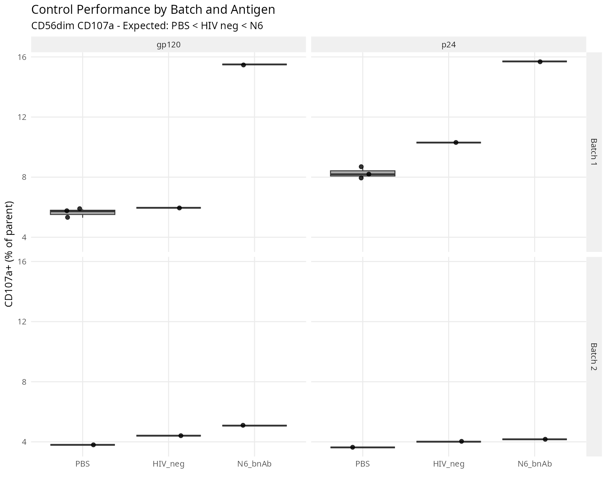
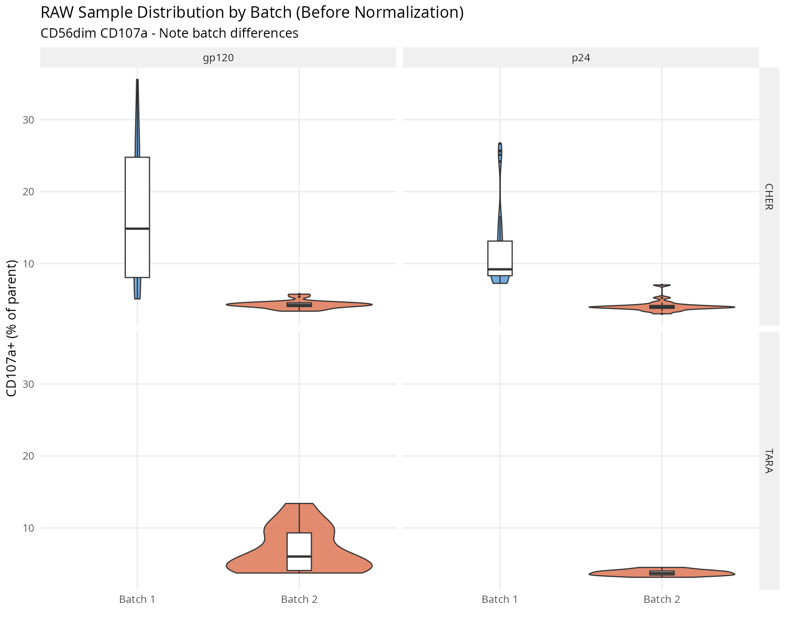
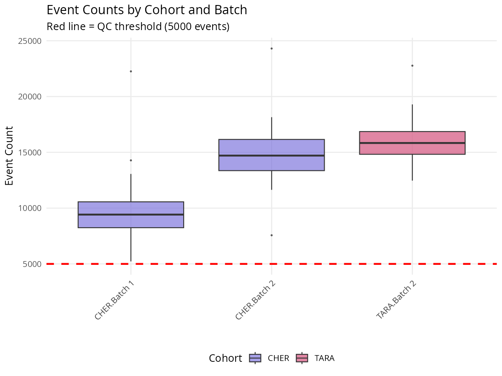
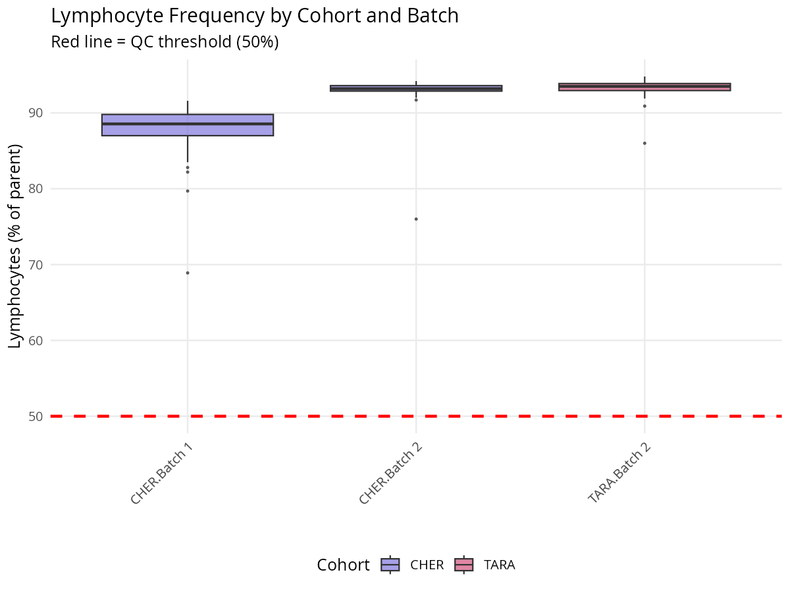
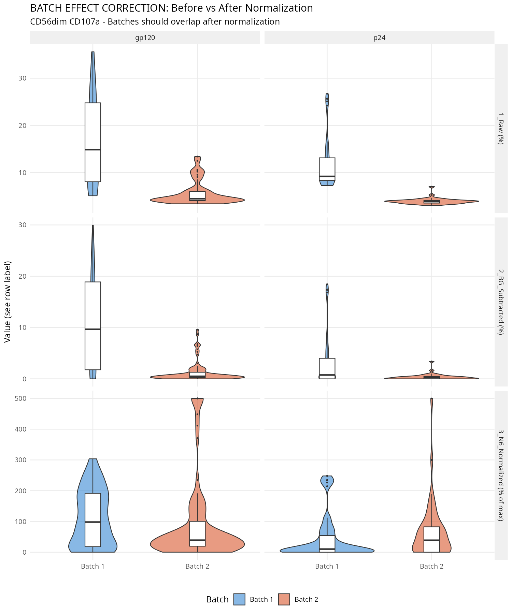
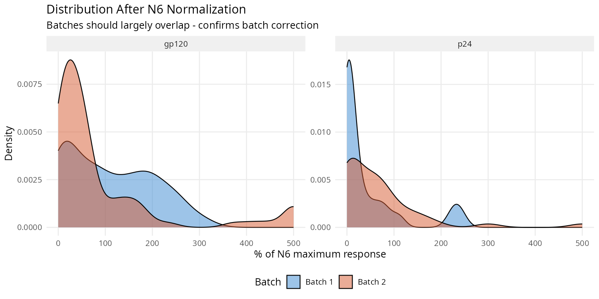

Generated: 2026-04-09 11:51:24
This dataset contains ADNK (Antibody-Dependent NK cell) functional assay data from two pediatric HIV cohorts:
| Cohort | Design | Subjects | Samples | Key Question |
|---|---|---|---|---|
| CHER | Longitudinal, treatment interruption | 22 | 124 | How does ADCC change across treatment phases? |
| TARA | Cross-sectional | 23 | 46 | Does viral suppression status affect ADCC? |
The ADNK assay measures NK cell functional responses to HIV antigens (p24 and gp120) in the presence of participant plasma antibodies.
Total Events → Lymphocytes → Single Cells → Live CD3- → NK subsets:
| Marker | Function | Interpretation |
|---|---|---|
| CD107a | Degranulation | Cytotoxic granule release (primary ADCC readout) |
| IFNγ | Cytokine | Antiviral inflammatory response |
| MIP1β | Chemokine | Immune cell recruitment |
| FasL | Death ligand | Alternative killing mechanism |
Why controls matter: Controls establish the dynamic range of the assay and allow us to normalize across batches.
| Control | Purpose | Expected Response |
|---|---|---|
| PBS | No antibody baseline | LOWEST - Background/spontaneous NK activation only |
| HIV neg plasma | Negative control | LOW - No HIV-specific antibodies present |
| N6 bnAb | Positive control | HIGHEST - Known broadly neutralizing antibody, strong ADCC |
Expected hierarchy: PBS < HIV neg plasma ≤ N6 bnAb
| Plate | PBS | HIV neg | N6 bnAb | Hierarchy OK? |
|---|---|---|---|---|
| Batch 1 gp120 | 5.63% | 5.96% | 15.50% | ✓ PASS |
| Batch 1 p24 | 8.27% | 10.30% | 15.70% | ✓ PASS |
| Batch 2 gp120 | 3.80% | 4.41% | 5.08% | ✓ PASS |
| Batch 2 p24 | 3.63% | 4.01% | 4.17% | ✓ PASS |

What we check: PBS should have the lowest response (background), and N6 bnAb should have the highest (maximum ADCC).
Why it matters: If this hierarchy is violated, the assay may have failed (e.g., contamination, pipetting error, reagent issues).
Result: 4 / 4 plates pass
What we check: N6 bnAb should trigger strong degranulation (CD107a > 5%).
Why it matters: A weak positive control suggests the assay dynamic range is compressed, making it harder to detect real differences.
| Plate | N6 CD107a (%) | Threshold | Status |
|---|---|---|---|
| Batch 1 gp120 | 15.50% | > 5% | ✓ PASS |
| Batch 1 p24 | 15.70% | > 5% | ✓ PASS |
| Batch 2 gp120 | 5.08% | > 5% | ✓ PASS |
| Batch 2 p24 | 4.17% | > 5% | ⚠ LOW |
The normalization strategy (below) accounts for this by expressing results as % of each plate's N6 maximum.
What we check: Background (PBS) levels should be similar across batches. Large differences indicate technical variability.
Threshold: < 3-fold difference is acceptable.
| Marker | Antigen | Batch 1 PBS | Batch 2 PBS | Fold Difference | Status |
|---|---|---|---|---|---|
| CD56dim_CD107a | gp120 | 5.63% | 3.80% | 1.5x | ✓ OK |
| CD56dim_CD107a | p24 | 8.27% | 3.63% | 2.3x | ✓ OK |
| CD56dim_IFNg | gp120 | 2.66% | 0.15% | 17.7x | ⚠ BATCH EFFECT |
| CD56dim_IFNg | p24 | 1.33% | 0.60% | 2.2x | ✓ OK |

What we check:


Raw percentages cannot be directly compared across plates/batches because:
Remove spontaneous NK activation (PBS background) from each sample:
This isolates the antibody-dependent response.
Express each sample as a percentage of the maximum possible response (N6):
This gives "% of maximum ADCC response" which is comparable across all plates.
We compare batch distributions before and after normalization. Successful normalization should:

| Stage | Antigen | Batch 1 Mean | Batch 2 Mean | Fold Diff | p-value | Significant? |
|---|---|---|---|---|---|---|
| 1_Raw (%) | gp120 | 16.66 | 5.66 | 2.94x | 0.0000 | YES |
| 1_Raw (%) | p24 | 11.81 | 3.93 | 3.01x | 0.0000 | YES |
| 2_BG_Subtracted (%) | gp120 | 10.85 | 1.25 | 8.69x | 0.0000 | YES |
| 2_BG_Subtracted (%) | p24 | 3.23 | 0.37 | 8.68x | 0.0016 | YES |
| 3_N6_Normalized (% of max) | gp120 | 109.95 | 91.75 | 1.20x | 0.0053 | YES |
| 3_N6_Normalized (% of max) | p24 | 43.51 | 65.98 | 1.52x | 0.1016 | NO |

| Folder | Contents | Description |
|---|---|---|
| 01_QC_Reports/ | CSV files | Detailed QC check results for each plate |
| 02_QC_Plots/ | PNG images | Control performance, batch distributions, event counts |
| 03_Batch_Correction/ | PNG images + CSV | Before/after normalization comparisons |
| 04_Normalized_Data/ | XLSX files | Analysis-ready datasets with normalized values |
| 05_Cleaned_Metadata/ | CSV files | Subject metadata with issues flagged |
| 06_Summary/ | This report | QC summary and methodology documentation |
| Suffix | Meaning | Example |
|---|---|---|
| (none) | Raw value from FlowJo | NK CD56dim/CD107a | Freq. of Parent |
| _PBS | PBS control value for this plate | ...CD107a | Freq. of Parent_PBS |
| _BGsub | Background-subtracted | ...CD107a | Freq. of Parent_BGsub |
| _N6 | N6 control value for this plate | ...CD107a | Freq. of Parent_N6 |
| _NormN6 | Normalized to N6 (% of max) | ...CD107a | Freq. of Parent_NormN6 |